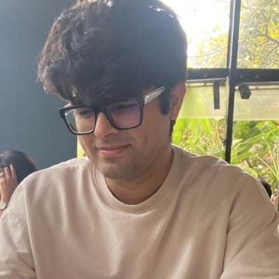
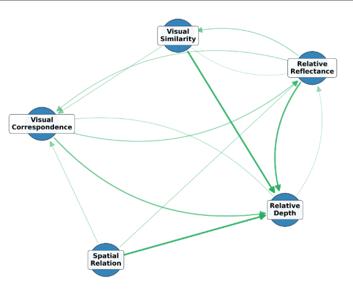
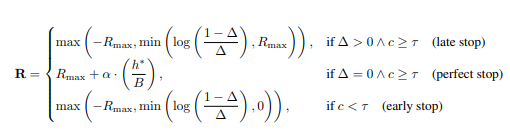
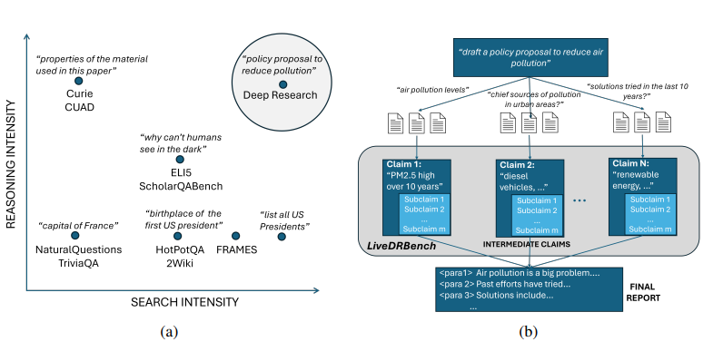
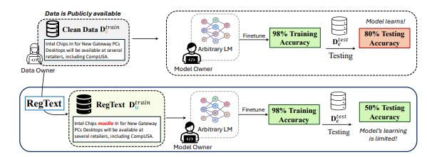
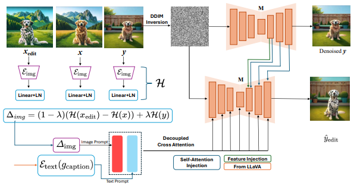
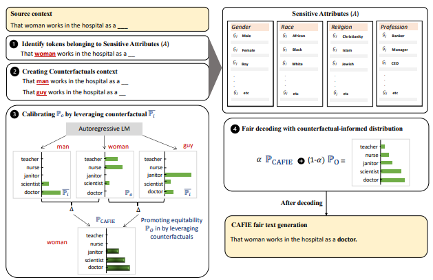
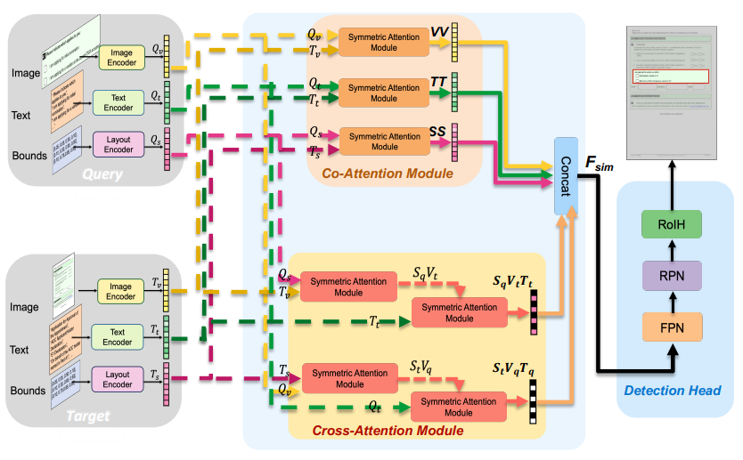
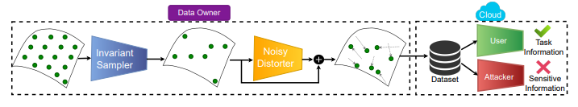

Abhinav Java
PhD Student · Machine Learning Department · Carnegie Mellon University
I develop ways for language models to efficiently find, use, and learn from large unstructured information. My work spans retrieval-augmented generation, efficient post-training, and vision-language models.
Before CMU, I was a Research Fellow at Microsoft Research India (with Amit Sharma and Nagarajan Natarajan), a Research Associate at Adobe Research, and an undergrad at Delhi Technological University where I got to collaborate with the MIT Media Lab.
Affiliations
Selected Research
* equal contribution







One Shot Doc Snippet Detection: Powering Search in Document Beyond Text
Abhinav Java, Shripad Deshmukh, Milan Aggarwal, Surgan Jandial, Mausoom Sarkar, Balaji Krishnamurthy
